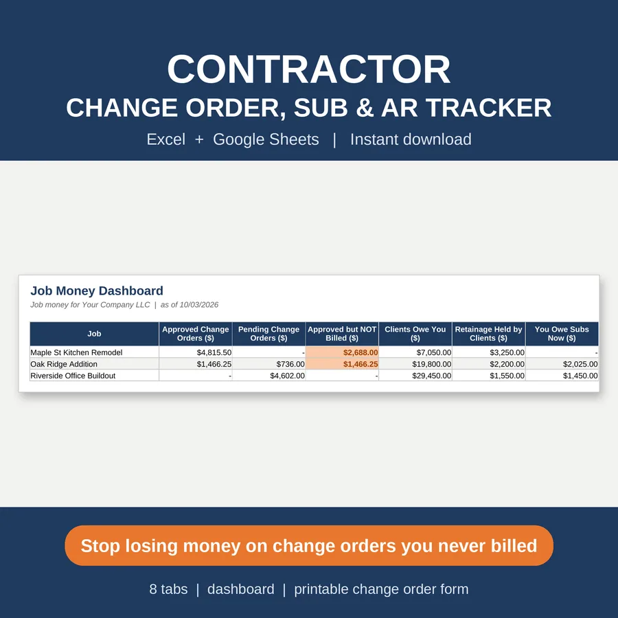
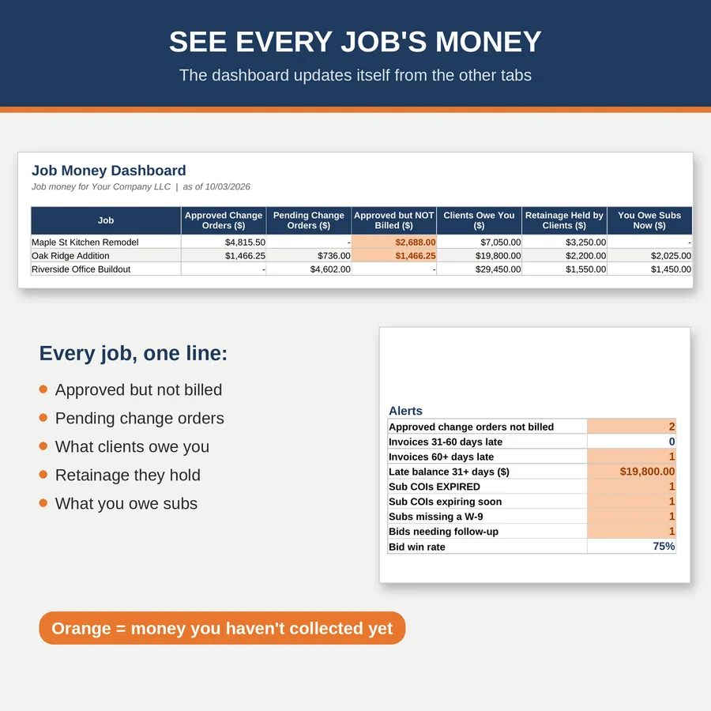

Excel and Google Sheets template
Change order template for Excel, with an AR tracker
Log every change order, print a signed form in seconds, and see who still owes you. One file, no macros, no subscription.
$17.00 on Etsy · Instant download

Who it's for
For contractors who are tired of chasing money
If your change orders live in texts, emails and the back of a truck seat, this is for you. I built it for remodelers, builders and specialty trades who do extra work and then wait too long to get paid for it.
Two things quietly cost contractors the most. One is work done without a signed change order. The other is a balance nobody followed up on. This change order template for Excel handles the first, and the built-in AR tracker handles the second, so both sit in the same file.
You don't need to be a spreadsheet person. Sample jobs are already filled in so you can see how everything connects. Look around, clear them out, then add your own.
What's inside
What's in the change order template and AR tracker
Start Here
A short walk through setup, plus a 15-minute weekly money check.
Job Money Dashboard
Totals, unbilled change orders, client balances and late payments in one place, with charts of receivables by age and change orders by status.
Change Order Log
Type a CO number and the Printable Change Order Form fills in for you, with signature lines ready for the client.
Subcontractor Tracker
Keep an eye on insurance certificate expiration, W-9 status, retainage and lien waivers for every sub.
AR Tracker
Billed, retainage and net due for each invoice, sorted into aging buckets: current, 1 to 30, 31 to 60 and over 60 days.
Bid Log and Settings
Record the bids you send and watch your win rate. Settings holds the lists the rest of the file uses.

How it works
Set it up once, check it once a week
Download
Buy on Etsy and download the file. Open it in Excel, or upload it to Google Drive and open it with Google Sheets.
Set up once
Clear the sample jobs and add your own. Plan on about 10 minutes.
Log changes
When extra work comes up, add a line to the Change Order Log and print the form.
Weekly money check
Spend 15 minutes a week on the dashboard and the AR Tracker, then call the people who owe you.
Questions
Change order template FAQ
Do I need Excel?
No. It works in Excel and in free Google Sheets. Upload the file to Google Drive and open it with Sheets. There are no macros.
How does the printable change order form work?
Type a CO number in the Change Order Log and the Printable Change Order Form fills in with that change order. It has signature lines, so you can print it and get it signed.
Does it track retainage and aging?
Yes. The AR Tracker shows billed, retainage and net due, and sorts what's owed into current, 1 to 30, 31 to 60 and over 60 days.
Is there a subscription?
No. It's a one-time download from Etsy. No subscription, and no macros.
Can I use it with the job costing spreadsheet?
They work well side by side. The job costing spreadsheet tracks budget vs actual by cost code, and this file tracks the change orders and the money you're owed.
Instant download
Get the change order template
$17.00 on Etsy. You'll see the full listing and check out there.
Get it on EtsyMore kits